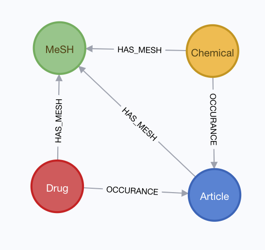

Neo4j and Cypher Notes
Creating Drug/Chemical Co-Occurrence Graph
- Data on occurance of drugs/chemicals in pubmed abstracts imported
- generated in section detailed in elasticsearch document
Python neo4j-driver used to create a graph data base with the schema: 
Querying Reactome in Cypher
Finding gene products associated with cellular response to oxidative stress
MATCH (gt:GO_Term{accession: "0034599"})-[:goBiologicalProcess]-(p:Pathway)-[]-(r:Reaction)-[]-(ge:GenomeEncodedEntity)
WHERE ge.speciesName = "Homo sapiens"
RETURN DISTINCT ge.displayName
LIMIT 10Results
"2xHC-TXN2 [mitochondrial matrix]"
"TXN [cytosol]"
"P4HB [endoplasmic reticulum lumen]"
"2xHC-TXN [cytosol]"
"HC53,56-P4HB [endoplasmic reticulum lumen]"
"TXN2 [mitochondrial matrix]"
Finding gene products associated with cardiovascular system disease
MATCH (d:Disease)-[]-(p:PhysicalEntity)
WHERE toLower(toString(d.displayName)) CONTAINS 'card'
OR toLower(toString(d.displayName)) CONTAINS 'vasc'
RETURN d.displayName, size((d)--(:Drug)) as Drugs, size((d)--(:GenomeEncodedEntity)) as GeneEntities, count(p) AS PhysicalEntityCount, size((d)--(:PhysicalEntity)--(:Disease)) as PEAssocDisease, size((d)--(:PhysicalEntity)--(:ReactionLikeEvent)) as PEAssocReactLike, size((d)--(:PhysicalEntity)--(:GenomeEncodedEntity)) as PEAssocGeneEntities
ORDER BY PhysicalEntityCount DESCResults
| d.displayName | Drugs | GeneEntities | PhysicalEntityCount |
|---|---|---|---|
| "cardiofaciocutaneous syndrome" | 0 | 23 | 34 |
| "myocardial infarction" | 20 | 0 | 20 |
| "basal ganglia cerebrovascular disease" | 0 | 6 | 7 |
| "cerebrovascular disease" | 5 | 0 | 5 |